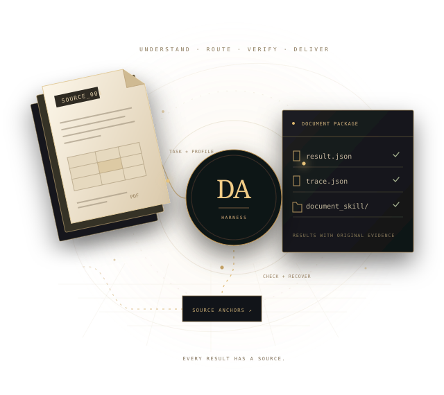

FROM COMPLEX DOCUMENTS TO TRUSTED DATA
让复杂文档，
成为可信数据。
一句话理解任务，按需选择解析路径。
从原始文档到结构化结果，每一步都有据可查。
开源 · CLI 驱动 · 由 YCYC 团队构建

01 THE REAL TASK
面对的，是一整批
脏乱的真实资料。
论文、影印史料、财报和合同，格式与质量各不相同。
解析只是起点，整理后的数据还需要可检索、可复核、可入库。
答辩应用场景中的近代史资料
78 本现代参考文献 · 64 本影印与扫描史料
3 万余页影印资料的规模，让逐本描述、正文按需读取成为必要。
资料数量与页数来自决赛答辩场景；实际执行样例另有公开记录。
更少上下文负担。
02 THE DATA AGENT HARNESS
模型做判断，
Harness 把事情做完。
DeepSeek 理解与规划 · MinerU 按需解析
Harness
编排工具、管理上下文、维护质量闭环。
先明确目标，再处理文档。
从一句需求，得到
可执行的处理计划。
理解要找什么、需要哪些字段、哪里值得复核。结合文件类型、页数、文本层与版面风险，为工具选择提供依据。
“整理这份财报，提取关键指标，
并检查合计行。”
- 文档类型
- 财务报告 / PDF
- 任务目标
- 结构化抽取 + 数字校验
- 复核重点
- 表格合计、单位、原文位置
把算力花在需要它的地方。
本地能处理的先直解，
复杂区域再升级。
简单文本层和原生格式优先本地提取。低质量扫描、复杂版面与表格按画像进入 MinerU 解析路径；需要时再选择精准解析或 VLM 复核。
-
01
本地提取HTML · Word · PPT · 简单 PDF 文本层
-
02
轻量 Agent API适合其服务限制内的文档
-
03
精准解析 / 本地 MinerUOCR · 大文档 · 复杂版面
-
04
针对性 VLM 复核关注存在风险的页段与表格
把问题留在执行过程中。
发现乱码与质量异常，
复核、重试，保留原因。
检查文本噪声、数字合计、结构信号和来源信息。根据质量报告执行文本清理、OCR 重试或解析回退，将每次尝试与选择写入日志。
交付结果，也交付依据。
每份原始资料，
一个可追溯的资料包。
输出结构化数据、人工可读摘要、执行日志与检索分块。被拆成多个页段的资料可合并回原始文档，保留页段和来源记录。
source_document/
├── result.json
├── summary.md
├── trace.json
├── retrieval/
│ └── retrieval_chunks.jsonl
└── document_skill/
├── SKILL.md
└── references/
├── content.md
├── tables.md
└── evidence.md03 SEE THE WORKFLOW
从输入指令，
到打开交付资料。
决赛答辩中的界面流程演示。
观看路由、复核与渐进式资料包如何串联。
录屏展示的是答辩用界面流程示意。CLI 的可复跑结果、日志与评测材料见下方公开证据。
04 EVIDENCE, NOT JUST OUTPUT
能力有依据，
结果可复查。
标注评测案例
覆盖财报、合同、OCR、Office
及公开真实 PDF 等提交样例。
标注字段匹配
字段 precision / recall / F1 为 1.0，
统计口径与逐字段结果均可查。
自动化测试通过
验证路由、恢复、交互与资料交付，
GitHub CI 覆盖 Python 3.10
/ 3.12。
字段指标基于 17 个提交案例的轻量标注；范围包含受控样例，不等同于通用 OCR 字符或表格单元格准确率。
MDIC 2026 · 智能进化 · Agent 能力评测赛道三等奖获奖团队 YCYC · 作品《MinerU Data Agent：面向复杂文档的可审计数据智能体》
官方获奖名单# 获取并安装
git clone https://github.com/codezzzsleep/mineru-data-agent.git
cd mineru-data-agent
python -m pip install -e ".[dev]"
# 运行一个无需模型密钥的 HTML 样例
data-agent run \
--input examples/cases/case_1_financial_report.html \
--out runs/demo \
--task "抽取财报关键字段并检查合计行" \
--profile auto